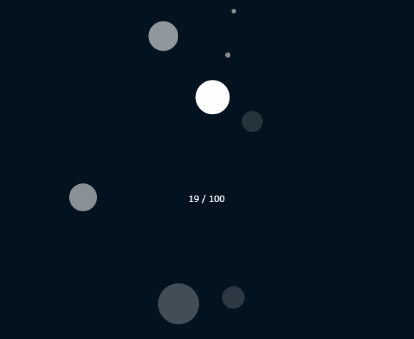

パーティクルに重力を適用する
実行例
 実行結果を見る
ソースコード
TypeScript
解説/アルゴリズム
export type Particle = {
x: number;
y: number;
vx: number;
vy: number;
radius: number;
opacity: number;
lifespan: number;
damage: number;
};
export function init(
x: number,
y: number,
vx: number,
vy: number,
radius: number,
opacity: number,
lifespan: number,
damage: number
): Particle {
return { x, y, vx, vy, radius, opacity, lifespan, damage };
}
// 重力を引数として追加する
export function update(p: Particle, gravity: number): void {
p.vy += gravity;
p.x += p.vx;
p.y += p.vy;
p.lifespan -= p.damage;
p.lifespan = Math.max(0, p.lifespan);
}
export function isDead(p: Particle): boolean {
return p.lifespan === 0;
}
Particle の更新用関数に重力を引数として追加し、
位置を更新する前に y 軸の加速度に重力を足し合わせます。